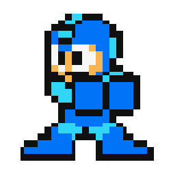

Hola, soy el creador de The RetroParadise, pueden llamarme HoftheGreed, originalmente, esta página es una idea que ya llevaba rato planeando, ya que soy un gran fanático de los videjuegos y creo firmemente en que debería haber alguna manera de preservarlos, pero realmente no tenia motivación de hacer, sin embargo, en la universidad surgió la excusa perfecta para hacerlo, ya que mi profesora de Web nos pidió como proyecto final realizar una página web a nuestra elección, es por ello que comencé a diseñar todo desde cero, fue bastante complicado ya que me estaba metiendo con lenguajes que nunca habia usado (como php), además de que en el transcurso me di cuenta que no tenia tanta libertad como pensaba por temas legales (como la polémica de compartir ROMS), por lo que tuve que reestructurar el objetivo de mi página y termine optando por convertirla en un repositorio de emuladores para Windows
No es un secreto que me basé en páginas como Emuparadise (las cuales tuvieron que detener su difusión de ROMS precisamente por que son prácticas ilegales), pero al menos, de alguna manera, esta es mi manera de poner mi granito de arena en la preservación de los videojuegos.
Es posible que en un futuro hostee esta página en algún dominio (claro, cuando este mejor hecha y tenga mejor seguridad para evitar robo de información), pero de momento, podría pensarse que esta es una primera versión de The RetroParadise
